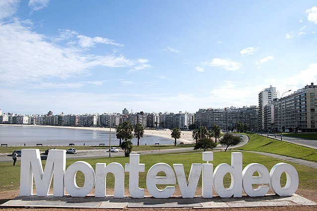
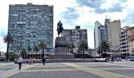
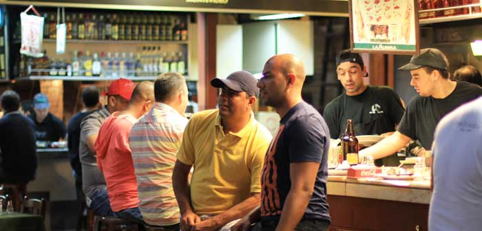
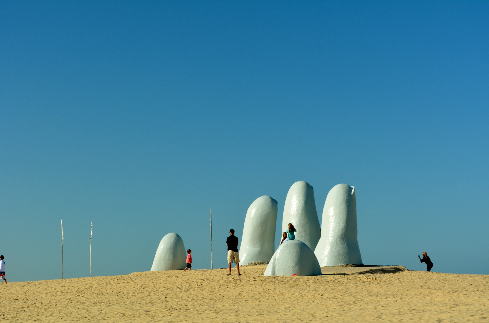
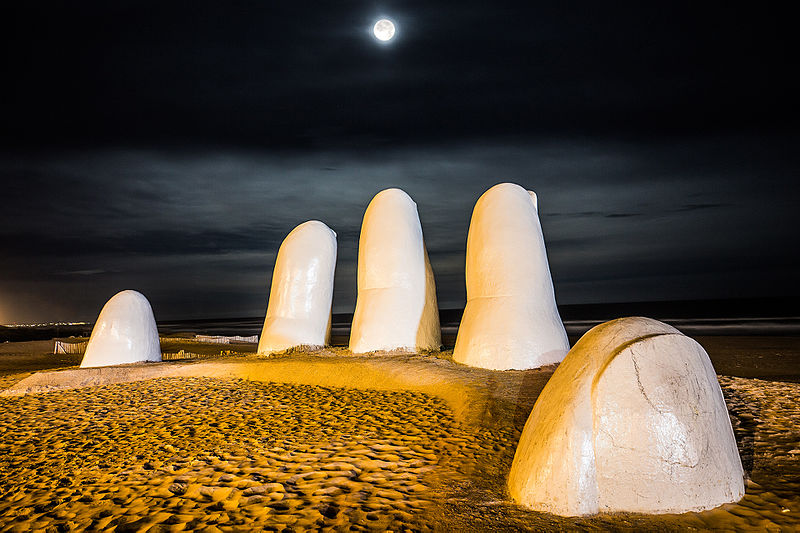
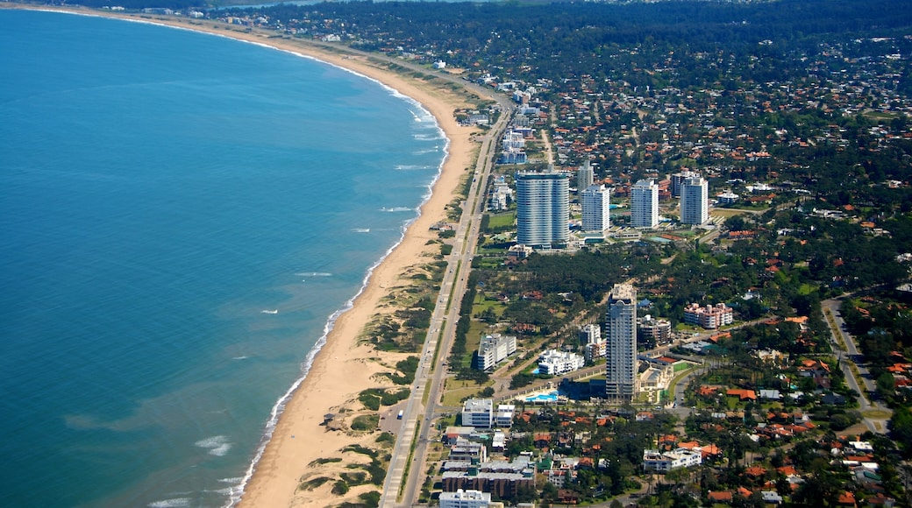
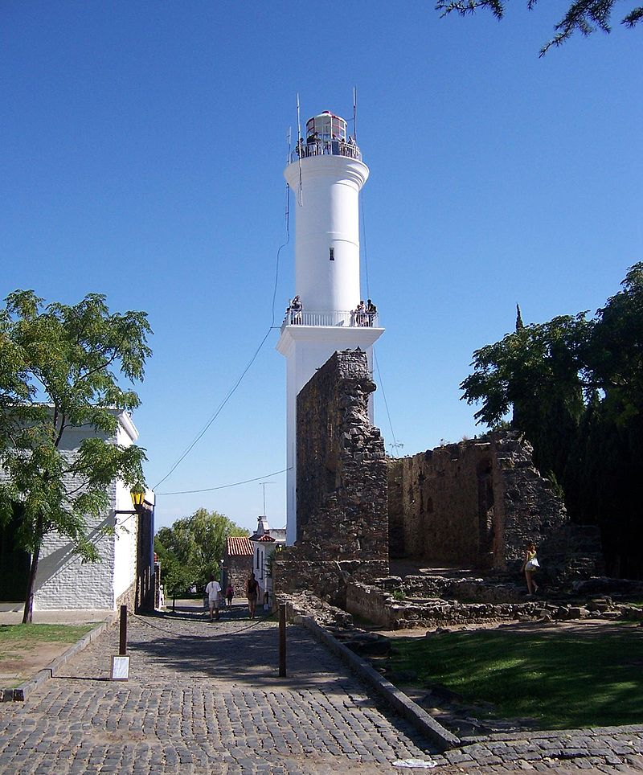
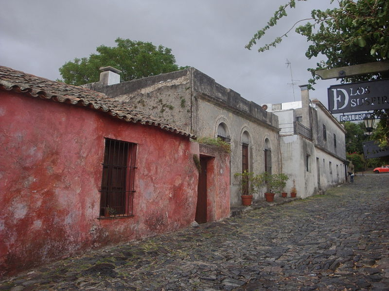
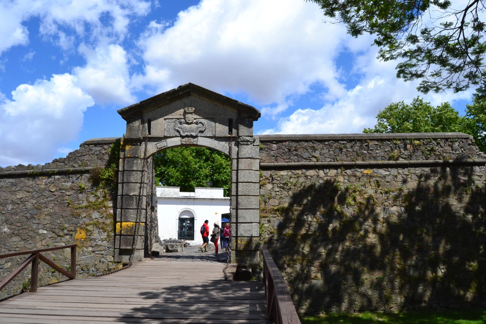

Uruguay, cuyo nombre oficial es República Oriental del Uruguay, es un país soberano de América del Sur, situado en la parte oriental del Cono Sur. Su capital y ciudad más poblada es Montevideo. Limita al noreste con Brasil estado de Río Grande del Sur, al oeste y suroeste con Argentina con las provincias de Corrientes, Entre Ríos y Buenos Aires, y la Ciudad Autónoma de Buenos Aires (separada por el Río de la Plata) y tiene costas en el océano Atlántico por el sur.
Consulta el clima del lugar al que quieras viajar
Destinos ofrecidos
MONTEVIDEO
Capital de la República Oriental del Uruguay y del departamento homónimo. Se ubica en la zona sur del país, posee costas sobre el Río de la Plata, donde se ubican la bahía de Montevideo y el principal puerto de la región. La ciudad de Montevideo es la cuna del tango, el candombe y la murga uruguaya, y cuenta con diversas actividades relacionadas con estos estilos musicales En la gastronomía predominan los platos basados en la carne vacuna además las comidas traídas por los inmigrantes que también son muy populares. El turismo es muy importante en el Uruguay y también en su capital, Montevideo. Cuenta con una variada oferta que incluye paseos históricos, centros nocturnos, playas, y turismo agropecuario (estancias turísticas, bodegas de vino y chacras) en sus afueras.
3 LUGARES TURÍSTICOS DE MONTEVIDEO QUE DEBES CONOCER
- Plaza Independencia 
- Mercado del puerto 
- Palacio Salvo
Es la plaza más importante de Montevideo. En el centro se encuentra la estatua del general José Gervasio Artigas, máximo prócer de Uruguay. Justo debajo del monumento se encuentra el Mausoleo, donde se guardan los restos del héroe nacional uruguayo.
Sin duda uno de mis lugares preferidos de Montevideo y uno de los mejores sitios para comer una parrillada. El mejor día para visitarlo es el sábado al mediodía cuando el bullicio y la música crean una auténtica fiesta.

Es el edificio más emblemático de Montevideo con 105 metros y 27 pisos. Fue inaugurado en 1922 y durante trece años fue la torre más alta de América del Sur. En la actualidad es el segundo edificio más elevado de Montevideo, solo superado por la Torre de Telecomunicaciones ANTEL.
PUNTA DEL ESTE
Es uno de los balnearios más exclusivos de América Latina y el más importante en Uruguay,el segundo mayor destino turístico del país detrás de Montevideo.Está ubicada sobre una estrecha franja de tierra que convencionalmente separa el Río de la Plata del Océano Atlántico, aunque ambas riberas están bañadas por aguas ya marinas. La ciudad ha sido referida como "El Mónaco del Sur", "La Perla del Atlántico", "Los Hamptoms de América del Sur", "El Miami Beach de América del Sur" Sus playas se dividen en «Mansa» del lado oeste, y «Brava» del lado este. El nombre dado a estas playas se debe a que la primera, al dar del lado del Río de la Plata (aunque sus aguas son saladas y verdes) y al estar protegida de los vientos y corrientes procedentes del océano Atlántico, presenta casi siempre sus aguas bastante calmas; además la isla Gorriti protege a esta playa de los vientos; mientras que la playa "Brava", al ser ya oceánica, posee un oleaje bastante más impetuoso.
3 LUGARES TURÍSTICOS DE PUNTA DEL ESTE QUE DEBES CONOCER
- MANO DE PUNTA DEL ESTE 
- PLAYA MANSA 
- PUERTO PUNTA DEL ESTE
La mano, Los dedos u Hombre emergiendo a la vida es una escultura de cinco dedos parcialmente sumergidos en arena, localizada en la parada 1 de la playa Brava en Punta del Este, un popular balneario turístico de Uruguay. Se lo refiere coloquialmente como Los dedos. En inglés, su nombre popular es The Hand (‘La mano’). Es una famosa escultura, convertida en símbolo para Punta del Este desde su acabado en febrero de 1982, además de transformarse en uno de los puntos de referencia más reconocibles de Uruguay
La playa Mansa es una playa uruguaya situada en la costa del Río de la Plata, Maldonado, Uruguay. La playa Mansa es para todo público, ideal para niños y para quienes desean tomar un placentero baño de mar, donde hay pocas olas, usualmente de pequeño tamaño

El Puerto de Punta del Este también conocido como Puerto Nuestra Señora de la Candelaria, es un puerto deportivo internacional ubicado en Punta del Este, Maldonado, Uruguay. Está ubicado en la confluencia del Río de la Plata y Océano Atlántico y ofrece para el atraque de embarcaciones deportivas: cinco marinas, amarres a muro y a borneo y una escollera de protección con muelle.
COLONIA DEL SACRAMENTO
Colonia del Sacramento, conocida en el medio local como Colonia, es la capital del departamento de Colonia, en el suroeste de Uruguay. Está ubicada en la ribera norte del Río de la Plata, a 177 kilómetros de Montevideo y frente a las costas de Buenos Aires, Argentina, de la que dista solo unos 50 kilómetros (en línea recta).Se caracteriza por sus calles angostas de piedra, que resaltan su tradición militar. Su proximidad con la ciudad de Buenos Aires la vincula fuertemente con esta. Son numerosos los viajeros que llegan y parten con ese destino y también los habitantes de Buenos Aires que tienen propiedades en ella. Existe un proyecto para unir ambas márgenes a través de un puente binacional. La distancia entre ambas ciudades cruzando por el Puente Libertador General San Martín es de unos 5 kilómetros.

3 LUGARES TURÍSTICOS DE COLONIA DEL SACRAMENTO QUE DEBES CONOCER
- FARO DE COLONIA 
- CALLE DE LOS SUSPIROS 
- BASTION DE SAN MIGUEL 
El Faro de Colonia del Sacramento está ubicado sobre la costa del Río de la Plata, en Colonia, Uruguay. Fue construido en enero de 1857. Es una torre circular de mampostería blanca con cúpula a franjas radiales blancas y rojas. Tiene una estructura única de base cuadrada y torre cilíndrica que llega hasta la linterna. Su altura es de 26 metros y posee un alcance luminoso de 7,8 millas náuticas. La energía utilizada por este faro fue variada, primero utilizó lámparas de querosene, luego gas acetileno, electricidad y en 1997 se implementaron los paneles solares.
Está ubicada dentro del casco histórico, declarado Patrimonio de la Humanidad por la Unesco en 1995. Nace en la Plaza Mayor y sigue en pendiente hasta el Río de la Plata. Es una calle angosta de características portuguesas, con empedrado de cuña y sin veredas. Los lados están inclinados hacia el centro para formar una canaleta de desagüe. Las casas tienen paredes de piedra, techos de teja y pisos de cerámica.Las puertas y ventanas son pequeñas y de madera.Aunque sólo se conservan casas con techo a dos aguas, había también de tres y de cuatro
Fuerte histórico de gran tamaño en un entorno costero con cañones y vistas panorámicas. Se localiza en el tope de la sierra de San Miguel. Presenta planta en el formato rectangular. El perímetro de sus murallas totaliza 300 metros.Dadas las reducidas dimensiones, no fue posible construir rampas que uniesen los planos superiores de los baluartes, donde se abren 18 cañoneras en total. El acceso al fuerte era hecho por un puente levadizo sobre un foso inundado. En el terraplén, estaba el edificio de la capilla.
PAQUETES TURISTICOS
| DESTINO | DÍAS | INCLUYE | PRECIO FINAL POR PERSONA |
|---|---|---|---|
| montevideo | 7 dias y 6 noches | Hotel 3 estrellas, desayuno incluido y una excursión a Palacio Salvo | 5000usd |
| Punta del Este | 8 dias y 7 noches | Hotel 3 estrellas, vuelos incluidos y una excursión al Puerto Punta del Este | 5500usd |
| Colonia del Sacramento | 5 dias y 4 noches | Hotel 3 estrellas, desayuno incluido y una excursión al Faro de la Colonia del Sacramento | 2500usd |
| Conociendo Uruguay | 15 dias y 14 noches | Recorre las 3 ciudades más importantes del país. All inclusive | 8000usd |